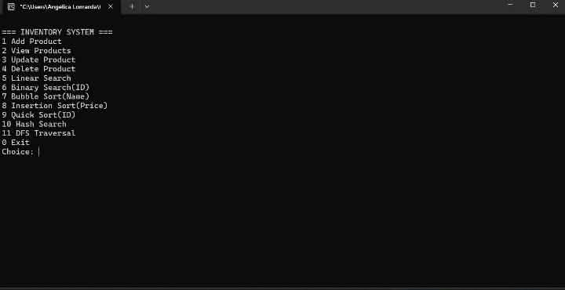

My Projects
Here are some projects related to my learning journey.
Personal Portfolio Website
A personal website that introduces me and showcases my skills and projects.
Technologies: HTML, CSS
View Project

C Programming Exercises
Practice exercises that develop programming logic and problem-solving skills.
Technologies: C Programming
View Project